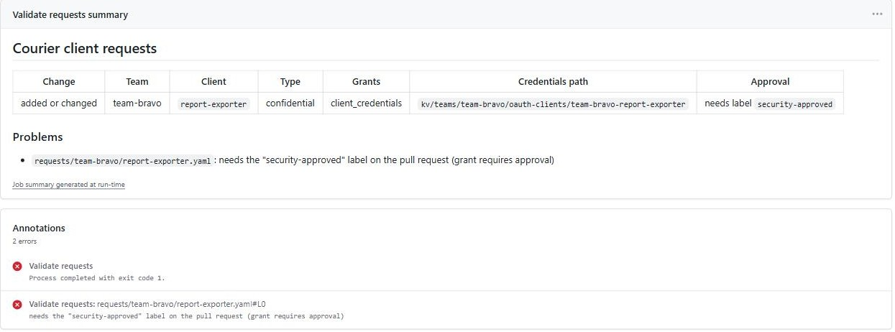
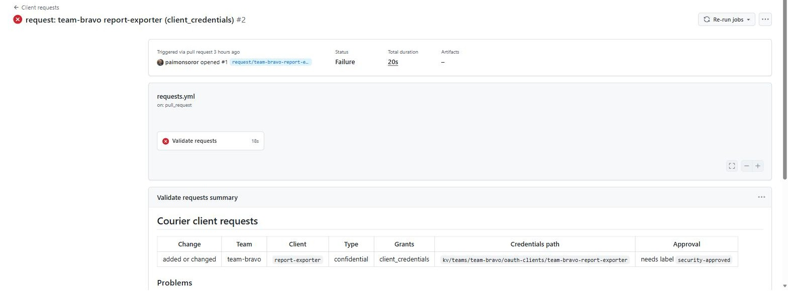
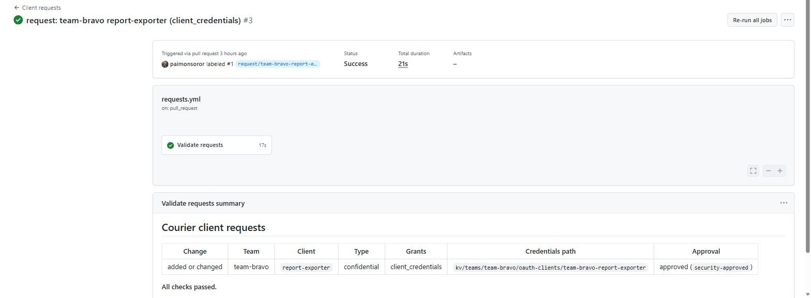
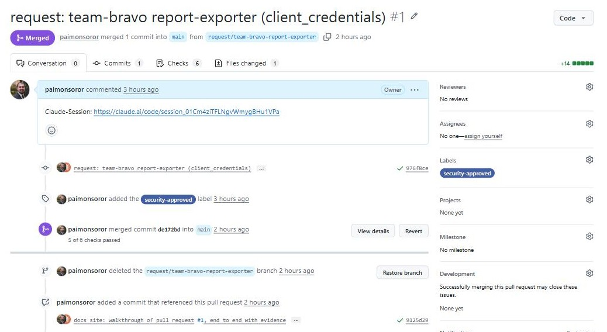
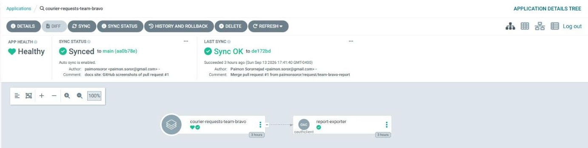

One request, end to end
This page follows a real request through Courier in the reference environment: team-bravo asks for a machine-to-machine client. At every step it shows what happened, the evidence captured at the time, and the command that lets you check the same thing yourself. Nothing here is illustrative; timestamps, messages and outputs are from the run.
For the full record of what this request set out to do and every object it created in each platform, see What PR #1 did for team-bravo.
At a glance
| Time | Step | Actor | Result |
|---|---|---|---|
20:51:29 | Pull request #1 opened | requester | One file added: requests/team-bravo/report-exporter.yaml |
20:51:53 | Policy check | GitHub Actions | failed approval label missing (18 s run) |
20:53:08 | Label security-approved added | approver | Check re-ran automatically |
20:53:29 | Policy check | GitHub Actions | passed |
21:40:39 | Merged as de172bd | maintainer | Request is now on main |
~21:41 | Sync | ArgoCD | Application courier-requests-team-bravo created and synced |
21:41:45 | Credentials issued | controller | READY True, credentials in vault |
21:42 | Access check | verification script | passed owner reads and uses them; other team denied |
Merge to usable credentials: about 66 seconds, including a manual ArgoCD refresh (see step 5). No person saw, copied or transmitted the secret.
1. The request
The requester added a single file on branch request/team-bravo-report-exporter. The team directory makes team-bravo the owner; nothing in the file can point the credentials anywhere else.
# requests/team-bravo/report-exporter.yaml
apiVersion: courier.sororlab.dev/v1alpha1
kind: OAuthClient
metadata:
name: report-exporter
namespace: team-bravo
spec:
displayName: "team-bravo: nightly report exporter"
clientType: confidential
grantTypes:
- client_credentials
scopes:
- openid
- profile
- groupsCheck it yourself
go run ./cmd/courier validate requests2. The policy gate stops it
Opening the pull request triggered the Client requests / Validate requests check. The file was valid, but client_credentials lets a workload act as itself, so the repository policy requires an explicit approval label. The check failed in 18 seconds and put this annotation on the file:
requests/team-bravo/report-exporter.yaml
needs the "security-approved" label on the pull request (grant requires approval)
The run summary showed reviewers exactly what merging would do, before anything existed:
| Change | Team | Client | Type | Grants | Credentials path | Approval |
|---|---|---|---|---|---|---|
| added or changed | team-bravo | report-exporter | confidential | client_credentials | kv/teams/team-bravo/oauth-clients/team-bravo-report-exporter | needs label security-approved |

The rule came from requests/.policy.yaml (grantApprovals: client_credentials: security-approved), a file only the identity team can change. The approval requirement applies to the requests a pull request changes, so existing clients never need re-approval.
3. Approval re-runs the gate
At 20:53:08 the security-approved label was added. The workflow listens for labeled events, so the check re-ran without a new commit and passed at 20:53:29.
Check run on 976f8ce | Started | Completed | Conclusion |
|---|---|---|---|
| Validate requests | 20:51:35 | 20:51:53 | failure |
| Validate requests | 20:53:12 | 20:53:29 | success |

Check it yourself
curl -s https://api.github.com/repos/paimonsoror/courier/commits/976f8ce/check-runs \
| jq '.check_runs[] | select(.name=="Validate requests") | {conclusion, started_at, completed_at}'4. Merge
The pull request merged at 21:40:39 as commit de172bd, and the branch was deleted.

security-approved, and No reviews, the gap described below.No code-owner review is recorded on #1. Branch protection was not yet enabled on main (the GitHub API reported protected: false), so GitHub allowed the merge with a passing check but no review. The label gate did its job; the review gate was not switched on. Enable branch protection as described in the implementation guide before real teams use the repository.
5. ArgoCD picks up the merge
The courier-requests ApplicationSet saw a new directory, requests/team-bravo, and generated an application for it. The locked project allowed it to create exactly one kind of object: the OAuthClient in namespace team-bravo.
$ kubectl -n argocd get application -l app.kubernetes.io/part-of=courier
NAME SYNC HEALTH REV
courier-controller Synced Healthy de172bd07d1f67f87205325ff5fbde04ee12ea2d
courier-requests-team-alpha Synced Healthy de172bd07d1f67f87205325ff5fbde04ee12ea2d
courier-requests-team-bravo Synced Healthy de172bd07d1f67f87205325ff5fbde04ee12ea2d
report-exporter OAuthClient. Last sync: the merge of pull request #1.A minute after merge the team-bravo application did not exist yet: ArgoCD polls Git every few minutes by default. We asked the ApplicationSet to re-read Git immediately, and the application appeared within seconds. Without the refresh the same thing happens on the next poll. A GitHub webhook to ArgoCD removes the wait.
kubectl -n argocd annotate applicationset courier-requests \
argocd.argoproj.io/application-set-refresh=true --overwrite6. The controller delivers
The controller validated the object again with the same rules as the pull request check, wrote the new secret to the vault as pending, created the client in Authentik with that secret, bound it to group team-bravo, and promoted the vault entry to active.
$ kubectl get oauthclients -A
NAMESPACE NAME READY TYPE CLIENT ID SECRET PATH
team-alpha billing-sync True confidential BmNrqqyjaqWKLHgXPC7CtpBmKNo2Pye6DQjNMj6F kv/teams/team-alpha/oauth-clients/team-alpha-billing-sync
team-bravo report-exporter True confidential 8BhnTaEg83o1lfhlwLSbBqHL6N5rMGOdsUi9rfA9 kv/teams/team-bravo/oauth-clients/team-bravo-report-exporterThe controller log records the event with the client ID and path only:
2026-09-13T21:41:45Z INFO issued credentials
OAuthClient: team-bravo/report-exporter
client: team-bravo-report-exporter
clientId: 8BhnTaEg83o1lfhlwLSbBqHL6N5rMGOdsUi9rfA9
path: kv/teams/team-bravo/oauth-clients/team-bravo-report-exporterCheck it yourself
kubectl -n team-bravo describe oauthclient report-exporter
kubectl -n courier-system logs deploy/courier-controller-manager | grep report-exporter7. Access verified
Delivery is only half the claim. The other half is that the right team, and only that team, can use it. deploy/phase2/check-access.sh signs in to the vault as each team's test service account, exactly as a workload would, and tries to read the path.
$ deploy/phase2/check-access.sh team-bravo report-exporter
request team-bravo/report-exporter is Ready; credentials at kv/teams/team-bravo/oauth-clients/team-bravo-report-exporter
PASS team-alpha is denied
PASS team-bravo (owner) reads the credentials
PASS team-bravo credentials get a token from Authentik
ACCESS CHECK PASSED| Result | What it proves |
|---|---|
| team-alpha is denied | Another team, signed in with a valid identity, gets HTTP 403. Access follows identity groups, not knowledge of the path. |
| team-bravo reads the credentials | The owning team's identity maps to its vault policy, and the entry is state: active with a secret present. |
| credentials get a token from Authentik | The secret in the vault is the live one: a client_credentials request with it returns HTTP 200. |
What never happened
The strongest evidence is what is missing. For this request, the secret did not appear in:
| Place | How we know |
|---|---|
| The pull request or Git history | The request file has no secret field; the schema rejects unknown fields |
| CI logs and summary | The check runs before the secret exists; its summary shows only the vault path |
| ArgoCD or Kubernetes | OAuthClient status has no secret field; kubectl describe shows client ID and path only |
| Controller logs | The log line above is the full record of issuing; secrets have a redacting type that prints [REDACTED] |
| Anyone's inbox or chat | No one received it; the owning team reads it from the vault with their own identity |
What we learned
- The label gate works as designed. It blocked a high-risk grant, told the requester exactly what was needed, and cleared itself on approval without a new commit.
- Branch protection is a required setup step, not optional. Without it, the check still reports but merges do not wait for code-owner review.
- Sync latency is ArgoCD's polling interval. Delivery itself took seconds; add an ArgoCD webhook if teams expect credentials immediately after merge.
- Verification must include the negative case. "The owner can read it" alone would also pass if every team could read everything.
Reproduce it
- requester
Add
requests/<team>/<name>.yamlon a branch and open a pull request. See Request a client. - approver
For
client_credentials, addsecurity-approved; wait for Validate requests to pass; review and merge. - operator
Optionally refresh the ApplicationSet, then wait for Ready:
kubectl -n <team> wait oauthclient/<name> --for=condition=Ready --timeout=180s - operator
Prove access:
deploy/phase2/check-access.sh <team> <name>must printACCESS CHECK PASSED.